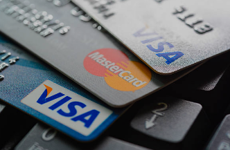

CREDIT CARD - IN NUTSHELL
“Your goal should be to pay off your credit card bills in full at the end of each month and set aside money toward your emergency savings.” – Suze Orman
What is a credit card?
A credit card is a payment card, usually issued by a bank or financial services company or specific stores, allowing the cardholders to purchase goods or services or withdraw cash on credit. Using the card thus accrues debt that has to be repaid later. They impose the condition that cardholders pay back the borrowed money, plus any applicable interest, as well as any additional agreed-upon charges, either in full by the billing date or over time. Credit cards are one of the most widely used forms of payment across the world.
What are the uses of credit card?
- Pay for good and services on credit.
- Making contactless payments.
- Making overseas payments.
- Building up your credit score if you remember to keep up with repayments.
What to consider before getting the credit card?
When you’re thinking about getting a new credit card, it’s important to think about what you’d like to do with it. When you’re ready to start your search, here are a few things to look out for:
- Card type - There are different types of cards to consider. Do I want a credit builder card to improve my credit rating, a purchase card to help budget for a big expense, a balance transfer card to consolidate all my debts, or a rewards card to take advantage of great offers?
- 0% period - There are many cards offering 0% interest for different periods – sometimes up to 45 days or longer. If this is important to you, remember to compare different deals and consider any add-on fees
- Card limit - Consider what is a sensible credit limit for you. A high credit limit can provide added flexibility, but a lower limit could reduce the risk of getting into debt.
- Extra charges - There could be added fees on certain cards, particularly those offering perks and cashback. Weigh up if the fee is worth paying for the benefit.
- Fee-free overseas - Think about whether you’re likely to need to use the card abroad. There are some cards that allow you to spend money abroad without extra charges.
What are the advantages of the credit card?
There are many advantages to using a credit card. Some of the benefits include:
- Go interest-free - Plenty of credit cards offer a 0% interest period. So you can borrow for free - with no interest charged, so long as you make your minimum monthly repayments.
- Convinience - Using a credit card lets you buy something today but put off the real cost until payday rolls around – so you don’t have to wait.
- Spread out the cost - If you need to make a big purchase, a credit card lets you pay over several monthly instalments. This can help with budgeting and, as long as you ensure you make your repayments, it won’t leave a huge hole in your finances.
- Cashbacks and rewards - Many credit card providers offer a range of rewards to customers. You could be getting air miles or shopper loyalty points each time you use your card, or even cashback on purchases.
- Boost your credit score - If you use a credit card responsibly, lenders will notice – and it can help to improve your credit score. If you have a low credit rating, you can get a credit builder credit card designed to help you build up your score.
- Record expenses - A credit card records each purchase made through the card, with a detailed list sent with your monthly credit card statement. This can be used to determine and track your spending and purchases, which could be useful when chalking out a budget or for tax purposes. Lenders also provide instant alerts each time you swipe your card, detailing the amount of credit still available as well as the current outstanding on your card.
- Purchase protection - Credit cards offer additional protection in the form of insurance for card purchases that might be lost, damaged or stolen. The credit card statement can be used to vouch for the veracity of a claim, if you wish to file one.
What are the disadvantages of the credit card?
Getting a credit card can come with pitfalls and drawbacks. Some of the risks you should be aware of include:
- Minimum due trap - The biggest con of a credit card is the minimum due amount that is displayed at the top of a bill statement. A number of credit card holders are deceived into thinking the minimum amount is the total due they are obliged to pay, when in fact it is the least amount that the company expects you to pay to continue receiving credit facilities. This results in customers assuming their bill is low and spending even more, accruing interest on their outstanding, which could build up to a large and unmanageable sum over time.
- Easy to overuse - With revolving credit, since your bank balance stays the same, it might be tempting to put all your purchases on your card, making you unaware of how much you owe. This could lead to you overspending and owing more than you can pay back, beginning the cycle of debt and high interest rates on your future payments.
- Getting trapped in the debt - If you can’t pay back what you borrow, your debts can pile up quickly. If you have bad credit, you could get hit with high interest rates – and once you’re in spiralling debt, it can be difficult to pay it all off.
- Damage your credit score - Your credit score can go down as well as up. Miss a payment on your card or allow debt to stack up and this can damage your credit rating. This can make it harder to get credit in the future.
- Extra fees - The interest rate isn’t the only number you need to look out for when choosing a credit card – there may be extra charges too. Your provider could impose fees if you miss a payment, go over your credit limit or withdraw cash, which is bad news if you’re already in the red. Some credit cards might also have a monthly or annual fees.
- Limited use - Credit card providers might charge you extra for things that are free with a debit card, such as withdrawing cash from an ATM or buying things overseas.
- Credit card fraud - Though not very common, there are chances you might be victim of credit card fraud. With advances in technology, it is possible to clone a card and gain access to confidential information through which another individual or entity can make purchases on your card. Check your statements carefully for purchases that look suspicious and inform the bank immediately if you suspect card fraud. Banks usually waive off charges if the fraud is proven, so you will not have to pay for purchases charged by the thief.
How to use credit card right?
- Read the fine print so you're aware of all the charges and conditions that govern your card.
- Don't spend more than you can pay back.
- Avoid putting daily purchases on your card so that you're aware of how much you're spending.
- Periodically check your credit limit and rein in spending when you've crossed 40% of your available credit limit.
- Always keep at least 40% of your credit limit for emergencies.
- Plan your purchases and use your card only for planned purchases. Avoid impulse buys on your credit card.
- Always try to pay your credit card bills in full each month to avoid the interest charges.
- Never miss a card payment, as this will result in higher charges and a hefty penalty.
- Approach the bank if you've overspent on your card. They could help you devise a pay-back plan with a fixed rate of interest to avoid you falling deeper into debt.
Conclusion
Credit card gives you convinient and cheap credit when you understand it well and apply financial discipline. It can however be a pitfall if used without care. Therefore, at the time you are getting the card, get the details, read terms and conditions and as I advise for every single purchase whether cash or through loan, delay and think about it. Allow me to conclude with the sayings from Suze Orman, "Your goal should be to pay off your credit card bills in full at the end of each month and set aside money toward your emergency savings!" Thank you for reading!
Disclaimar
While care is taken to update the information, products and services on this column and our other related websites, there may be inadvertent inaccuracies or typographical errors or delays in updating the information. The material contained in this site and related pages, is for refernce and general information purpose and the details mentioned in the respective of products and services document shall prevail in case of any inconsistency. Subscribers and users should seek professional advice before acting on the basis of information contained herein. Please take an informed decision with respect to any product or services after going through the relevant product/ service document and applicable terms and conditions.
About the Author
Galm Dida - Credit and Investment Coach (KCB - Isiolo) - I am passionate of financial independence for youth and women in marginalized regions. Currently supporting over 15 women and youth groups around Isiolo in the matters of savings and investment. Join us as we inspire the community in financial success.
Contact
Tell: 0741370493 || email: Send me an email || whatsapp: WhatsApp Me
Quick links
Learn more about money market fund (MMF)
Learn the difference between savings accounts and MMF
Learn how and where to save money
Learn how to live within your means